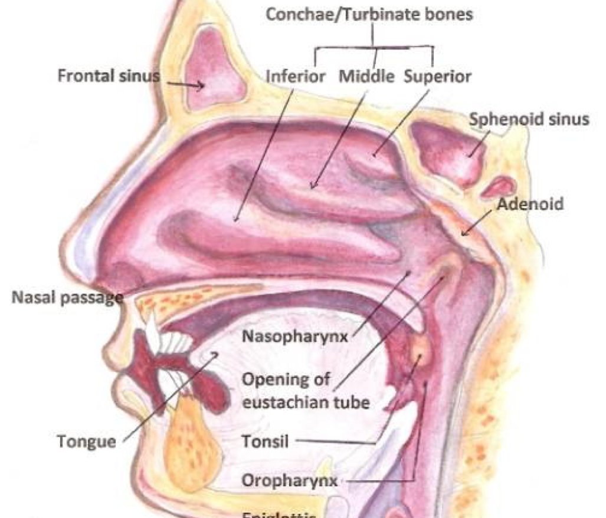
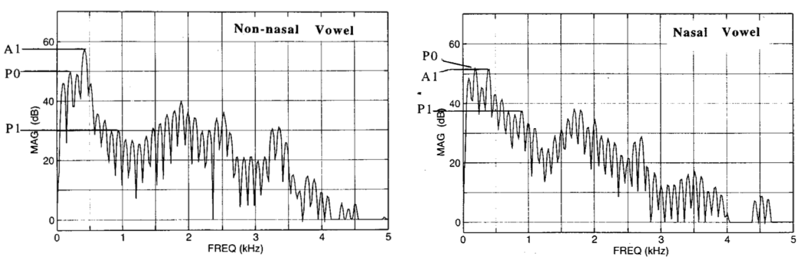
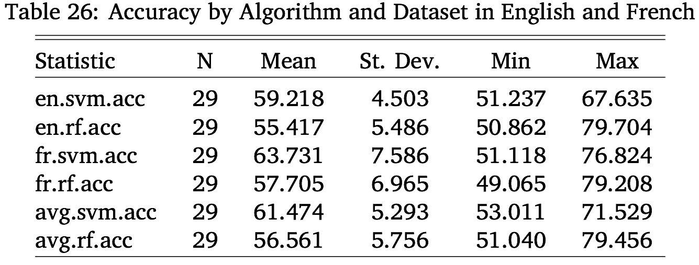

My Advisor, Rebecca
My Committee
Luciana Marques, Georgia Zellou, and Story Kiser
The rest of the CU Linguistic Community
My family
Jessica
Vowels
Opening the Velopharyngeal Port during vowel production to allow nasal airflow

|
‘Pats’ [pæts] |
‘Pants’ [pæ̃nts] |
|---|
|
‘seed’ [su] |
‘braid’ [sũ] |
|---|
| ### Humans are OK with vowel nasality |
| * … Yet it’s complicated for Linguists… |
“…To do my experiment I will need to find the point where nasality starts in a vowel, and I am struggling with that a bit.
Our current methods just aren’t that accurate
| ### A1-P0: The Reigning Champion |
|  |
| * “Nasality makes the vowel formants drop in power, and introduces a nasal resonance. Compare the two.” |
“CVN words should have increasing nasality through the vowel”
(A1-P0 should drop)

Going from known-oral to known-nasal parts of vowels, nasality should always go up.

Listeners clearly can make judgements about nasality in individual vowels*, but linguists can’t.
(c.f. Lahiri and Marslen-Wilson 1991, Beddor and Krakow 1999, Beddor 2013, Kingston and Macmillin 1995, Macmillin et al 1999)


Collect Data and measure possible features
Experiment 1 - What features are statistically linked to nasality?
Experiment 2 - What features are useful for identifying nasal vowels by machine?
Experiment 3 - What features are humans using to perceive nasality?
Experiment 4 - Do computers show a similar perceptual pattern?
I recorded 12 English and 8 French speakers making words with oral and nasal(ized) vowels
For English, we recorded CVC/CVN/NVC/NVN words
For French, we recorded nasal/oral vowel minimal pairs
Find things that could encode nasality, and measure them!
All measurement was done automatically by Praat Script
Measurements happened at two timepoints per vowel


| ### Vowel Formant Bandwidth |
 |

A file showing data 29 different features for two measurements per vowel per word
Annotated with information about language, speaker, phonological structure, etc
All of this was read into the R Statistics Suite
“If a feature doesn’t meaningfully change between oral and nasal vowels, humans won’t use it.”
Let’s test which features are different in oral and nasal vowels!
lmer(Amp_F1 ~ nasality + repetition + vowel + Timepoint + (1+ nasality|speaker) + (1|Word), data = eng)
This compares the “nasal” vowels to the “oral” vowels
Random slopes for speaker allow by-speaker variation in amount of change
Not all features showed a significant statstical link with nasality!

A1-P0 performed well in both languages
Duration showed major changes in both languages
Spectral Tilt was really strong in French, less so in English
Formant Bandwidth was really strong in both languages
There was some Formant Frequency effect too
P0’s Prominence is looking pretty good too.
Humans probably don’t use the features that didn’t show significant oral-to-nasal ∆Feature
We now know which features are linked with nasality across the entire dataset
… and which ones show the largest and most meaningful ∆Feature values
These tests show overall trends across several thousand words
What about vowel-by-vowel identification? How can we test that?
Uh… do a perception experiment?
Perceptual testing using humans is inefficient and expensive.


“I’m rooting for the pats in the Super Bowl”
“One should likely wear pants to a thesis defense”
“Uh, it just sounded like”pants”, bro.”
“Well, that one sounded more nasally.”
“Can I get my extra credit already?”

Humans hear a signal, find acoustical features, and then make judgements.
Machines can be given features, and then make judgements too.
Better accuracy with a feature means the feature is more useful.
Their decisions are easier to quantify.
They’ll tell you how they made the decision they did.
They live in my apartment!
They have no idea what “pants” are, and don’t watch football.
“Is this datapoint likely in class A, or class B?”
“Is the car driving normally, or crashing?”
“Is this language English or Chinese?”
“Is this handwritten symbol”1”? “2”? “3”? (…)
“Is this word a noun, or a verb, or an adjective, or…?”
Before we discuss RandomForests, we need to talk about…
Let’s pretend to be classifiers!

“I’m looking at a bird. What kind of bird is it?”
One Approach:

By asking enough questions looking at a training set, you’d end up with a Decision Tree.
Classification is just “following the tree”
Ask a question, then ask a different question based on the first one, then ask another….
3-500) Do that 498 more times
Let’s make a RandomForest!
They work well with small and large datasets
They’re transparent!
… but they’re not the most accurate algorithms out there
… and they’re a bit… odd sometimes.
So we should also use a model which is more accurate
Back to the waterfowl!

|

|
|---|
You are now recieving texts with bill length and body-length measurements for birds
The question is “Swan, or Duck?”

Look at all the data in an n dimensional space
Try to find a hyperplane with the best separation
This hyperplane is delineated by the “support vectors”
Classification is just seeing where the new data is relative to that line

(My approach was slightly more complex, using “kernels”, but you’ll have to read the paper for more info!)
SVMs are really accurate
They act exemplar-ish, when used as I used them.
They’re a “gold standard” for machine learning
RandomForests for transparency
SVMs for accuracy
Are any features good enough on their own to allow nasal perception?
Using both SVMs and RandomForests.
Using 10-fold cross-validation
116 models, one per feature per algorithm per language



So, none of the features are good enough on their own.
RandomForests can calculate which features were most useful for classification!
Reclassify, but shuffle the data for one feature per run
This is awesome!
Run an all-features-included RandomForest
Compare the Importance Values for each feature

… I wonder if all these important features would perform well as a group…?
Pick six a priori feature groupings
Test them with SVMs and RandomForests
Compare accuracy in light of the number of features

Remember, we did this for both English and French
What happens if you train a model on English, then test it on French?
If they’re fundamentally similar, it won’t matter!


P0’s Prominence was not very useful at all.
Formant Bandwidth was the best feature for English, strong in French
Spectral Tilt was the most useful feature in French, less so in English
A1-P0 performed well in both languages
Duration was really useful in both languages
There was some Formant Frequency effect too
So… uh… what about humans?
“English can use vowel nasality to identify ambiguous words. Let’s see which of these features is helpful!”
Create nasal vowels where each nasal feature is reduced
Create oral vowels where each nasal feature is added
Put them in contexts where part of the word is missing - ba(d) or ba(n)
If the listeners are confused more often or take more time to choose, the feature’s important!
bad |
ban |
|---|
bomb |
bob |
|---|
Reduction stimuli, where nasal features are reduced in nasal vowels
Addition stimuli, where nasal features are added to oral vowels
Linear Mixed Effects Regressions for accuracy and RT by Condition*Control

 |
Modifying all conditions or formants resulted in more confusion
Modifying all conditions or formants resulted in slower responses
Only modifying formant frequency and bandwidth had an effect on perception
 |
|---|
None of the experimental modifications affected confusion
Modifying all conditions or formants resulted in slower responses
Only modifying formant frequency and bandwidth had an effect on perception
Only formant modification had a significant effect on perception
Formant modification caused listeners to respond more slowly
Formant modification made listeners call some oral vowels “nasal”
Formant modification wasn’t enough to make nasal vowels “oral”
(We’ll talk more about that asymmetry at the end!)
So, computers predicted F1’s bandwidth as the most useful feature…

“Let’s give the computer the same experimental task as the humans, using the same altered stimuli, and see how they compare!”
NoNVN - Trained on CVCs, CVNs, and NVCs
EnAll - Trained on all the English data
EnFrAll - Trained on all data, English and French


Humans and machines did show similar patterns
Putting aside duration, the EnAll SVM mirrored the humans very well
Perceptual testing with machine learning isn’t crazy
Humans still win.

It’s probably F1’s bandwidth
It worked best in ML, had the best statistical link, and it makes sense acoustically
Hawkins and Stevens (1985) also points that direction
… but it’s probably not the only cue for vowel nasality
There was still something “nasal” about the vowels
We only took away universal formant changes
Vowel-specific formants changes in nasal vowels were not affected
This is in line with prior work
This makes phonological sense
If nasal vowels are orally different, then of course we wouldn’t confuse listeners
Our current measurements of nasality aren’t bad!
Machines can accurately classify nasality
The acoustics of nasality per se are clearly useful
… but other aspects of the vowel articulation are important too!
Most importantly…
Carignan, C. (2014). An acoustic and articulatory examination of the oral in nasal: The oral articulations of french nasal vowels are not arbitrary. Journal of Phonetics, 46(0):23–33.
Carignan, C., Shosted, R., Shih, C., and Rong, P. (2011). Compensatory articulation in american english nasalized vowels. Journal of Phonetics, 39(4):668 – 682.
Carignan, C., Shosted, R. K., Fu, M., Liang, Z.-P., and Sutton, B. P. (2015). A real-time mri investigation of the role of lingual and pharyngeal articulation in the production of the nasal vowel system of french. Journal of Phonetics, 50(0):34 – 51.
Chen, M. Y. (1997). Acoustic correlates of english and french nasalized vowels. The Journal of the Acoustical Society of America, 102(4):2350–2370.
Hawkins, S. and Stevens, K. N. (1985b). Acoustic and perceptual correlates of the non-nasal–nasal distinction for vowels. The Journal of the Acoustical Society of America, 77(4):1560–1575.
Shosted, R., Carignan, C., and Rong, P. (2012). Managing the distinctiveness of phonemic nasal vowels: Articulatory evidence from hindi. The Journal of the Acoustical Society of America, 131(1):455–465.